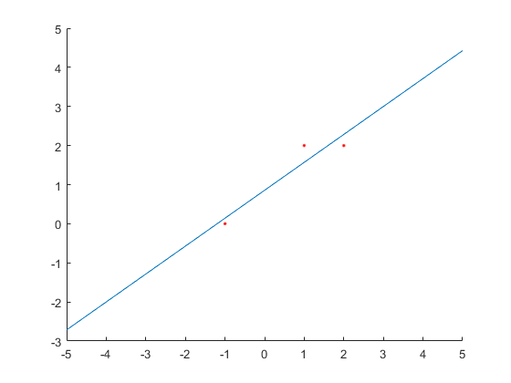

Contents
4.9
syms x;
A = [ 1 2 ; 1 2]
b = [ 4 ; 3]
M = transpose(A) * A
q = transpose(A) * b
r = inv(M) * q
A =
1 2
1 2
b =
4
3
M =
2 4
4 8
q =
7
14
Warning: Matrix is singular to working precision.
r =
Inf
Inf
4.10
A = [ 1 2 ; -1 1 ; 0 3]
b = [1 ; 3 ; 0]
c1 = A(:,1)
c2 = A(:,2)
proj = dot(c1, c2)/norm(c1)^2 * c1
basis = [c1 c2 - proj]
b1 = dot(b, basis(:,1))/norm(basis(:,1))^2 * basis(:,1)
b2 = dot(b, basis(:,2))/norm(basis(:,2))^2 * basis(:,2)
bhat = b1 + b2
x = linsolve(A,bhat)
M = transpose(A) * A
q = transpose(A) * b
x = inv(M) * q
A =
1 2
-1 1
0 3
b =
1
3
0
c1 =
1
-1
0
c2 =
2
1
3
proj =
0.5000
-0.5000
0
basis =
1.0000 1.5000
-1.0000 1.5000
0 3.0000
b1 =
-1.0000
1.0000
0
b2 =
0.6667
0.6667
1.3333
bhat =
-0.3333
1.6667
1.3333
x =
-1.2222
0.4444
M =
2 1
1 14
q =
-2
5
x =
-1.2222
0.4444
5.1
syms x;
A = [-1 1 ; 1 1 ; 2 1]
y = [ 0 ; 2 ; 2]
r = A\y
f = r(1,:) * x + r(2,:)
hold on;
plot(-1,0, 'r.')
plot(1,2, 'r.')
plot(2,2, 'r.')
fplot(f)
A =
-1 1
1 1
2 1
y =
0
2
2
r =
0.7143
0.8571
f =
(5*x)/7 + 6/7

5.10
syms n x;
M = [(9*n+5) (3*n+3) ; (3*n+3) (n+2)]
p = [(6*n+3) ; (2*n+2)]
xhat_n = simplify(inv(M) * p)
y = simplify(xhat_n(1,:) * x + xhat_n(2,:))
xhat_n = limit(xhat_n, n, inf)
y = simplify(xhat_n(1,:) * x + xhat_n(2,:))
subs(y,x,3)
M =
[ 9*n + 5, 3*n + 3]
[ 3*n + 3, n + 2]
p =
6*n + 3
2*n + 2
xhat_n =
(3*n)/(5*n + 1)
(n + 1)/(5*n + 1)
y =
(n + 3*n*x + 1)/(5*n + 1)
xhat_n =
3/5
1/5
y =
(3*x)/5 + 1/5
ans =
2
5.11
A1 = [ 0 1 ; 2 1 ; 3 1 ;5 1 ;7 1 ;8 1]
b1 = [4.2;5;5.3;6.1;7.9;8.6]
r1 = inv(transpose(A1) * A1) * transpose(A1) * b1
f2 = r1(1,:)*x + r1(2,:)
A2 = [0 0 1 ;4 2 1 ;9 3 1 ;25 5 1 ;49 7 1 ;64 8 1]
b2 = [4.2;5;5.3;6.1;7.9;8.6]
r2 = inv(transpose(A2) * A2) * transpose(A2) * b2
f2 = r2(1,:)*x^2 + r2(2,:)*x + r2(3,:)
syms c;
c = 8.6^(1/8)
A3 = [1 (c)^0 ;1 (c)^2 ;1 (c)^3 ;1 (c)^5 ;1 (c)^7 ;1 (c)^8]
b3 = [4.2;5;5.3;6.1;7.9;8.6]
r3 = inv(transpose(A3) * A3) * transpose(A3) * b3
f3 = r3(1,:) + r3(2,:) * c^x
norm(A1*r1-b1)
norm(A2*r2-b2)
norm(A3*r3-b3)
y = subs(f2, x, 10)
solve(f2 == 50, x)
A1 =
0 1
2 1
3 1
5 1
7 1
8 1
b1 =
4.2000
5.0000
5.3000
6.1000
7.9000
8.6000
r1 =
0.5534
3.8776
f2 =
(311*x)/562 + 5448/1405
A2 =
0 0 1
4 2 1
9 3 1
25 5 1
49 7 1
64 8 1
b2 =
4.2000
5.0000
5.3000
6.1000
7.9000
8.6000
r2 =
0.0437
0.1931
4.2782
f2 =
(6302904058865179*x^2)/144115188075855872 + (6515*x)/33744 + 1204206405519987/281474976710656
c =
1.3086
A3 =
1.0000 1.0000
1.0000 1.7125
1.0000 2.2410
1.0000 3.8376
1.0000 6.5718
1.0000 8.6000
b3 =
4.2000
5.0000
5.3000
6.1000
7.9000
8.6000
r3 =
3.9039
0.5707
f3 =
(5140745503474415*(2946741810785137/2251799813685248)^x)/9007199254740992 + 274713476997711/70368744177664
ans =
0.7527
ans =
0.3273
ans =
0.4566
y =
804103301948192000599/75984732912995008512
ans =
- (16*2^(1/2)*362473480785737621635060275393133184087^(1/2))/13292824660146662511 - 29340951572318781440/13292824660146662511
(16*2^(1/2)*362473480785737621635060275393133184087^(1/2))/13292824660146662511 - 29340951572318781440/13292824660146662511